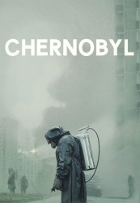

")
 gesehen am 06.07.2019
gesehen am 06.07.2019 
 IMDB-Wertung: 9.6 / 10
IMDB-Wertung: 9.6 / 10  Tomatometer: 96
Tomatometer: 96  Metascore:
Metascore: 
Im April 1986 kommt es im ukrainischen Atommeiler Tschernobyl zu einer katastrophalen Kernschmelze. Feuerwehr und Ersthelfer geben alles, um den Unglücksort zu sichern und die Folgen des Ereignisses einzudämmen - doch diese sind weitreichend.
Jahr: 2019
Dauer: 56 Minuten
FSK: 12
Land: USA Studio: HBOTonspuren: DD5.1 - ,
Untertitel: Deutsch,
Auflösung: 720p (1280x720) Größe: 2304 MB
Genre: Drama, Geschichte, TV-Serie
Regisseur: Johan Renck
Drehbuch: Craig Mazin
Soundtrack:
Darsteller:
 Jared Harris als Valery Legasov, 5 episodes, 2019
Jared Harris als Valery Legasov, 5 episodes, 2019 Stellan Skarsgård als Boris Shcherbina, 5 episodes, 2019
Stellan Skarsgård als Boris Shcherbina, 5 episodes, 2019 Adam Nagaitis als Vasily Ignatenko, 4 episodes, 2019
Adam Nagaitis als Vasily Ignatenko, 4 episodes, 2019 Emily Watson als Ulana Khomyuk, 4 episodes, 2019
Emily Watson als Ulana Khomyuk, 4 episodes, 2019 Paul Ritter als Anatoly Dyatlov, 4 episodes, 2019
Paul Ritter als Anatoly Dyatlov, 4 episodes, 2019 Robert Emms als Leonid Toptunov, 4 episodes, 2019
Robert Emms als Leonid Toptunov, 4 episodes, 2019 Alan Williams als KGB Chairman Charkov, 3 episodes, 2019
Alan Williams als KGB Chairman Charkov, 3 episodes, 2019 Adrian Rawlins als Nikolai Fomin, 3 episodes, 2019
Adrian Rawlins als Nikolai Fomin, 3 episodes, 2019 David Dencik als Mikhail Gorbachev, 2 episodes, 2019
David Dencik als Mikhail Gorbachev, 2 episodes, 2019 Gerard Kearns als Pravik, 2 episodes, 2019
Gerard Kearns als Pravik, 2 episodes, 2019 Jamie Sives als Sitnikov, 2 episodes, 2019
Jamie Sives als Sitnikov, 2 episodes, 2019 Ralph Ineson als General Tarakanov, 2 episodes, 2019
Ralph Ineson als General Tarakanov, 2 episodes, 2019 Barry Keoghan als Pavel, 2 episodes, 2019
Barry Keoghan als Pavel, 2 episodes, 2019 Donald Sumpter als Zharkov, 2 episodes, 2019
Donald Sumpter als Zharkov, 2 episodes, 2019 June Watson als Old Woman Babushka, 1 episode, 2019
June Watson als Old Woman Babushka, 1 episode, 2019 Josef Altin als Soldier, 1 episode, 2019
Josef Altin als Soldier, 1 episode, 2019 Michael McElhatton als Prosecutor Andrei Stepashin, 1 episode, 2019
Michael McElhatton als Prosecutor Andrei Stepashin, 1 episode, 2019 Ian Pirie als Site Officer Masha, 1 episode, 2019
Ian Pirie als Site Officer Masha, 1 episode, 2019 Laurence Spellman als Commission Heli Pilot, 1 episode, 2019
Laurence Spellman als Commission Heli Pilot, 1 episode, 2019Datei: X:\HD-Serien\Chernobyl S01\Chernobyl S01E01.mkv seit 06.07.2019
Festplatte: HD Serien(A-H)
 Es gibt insgesamt 182 Filme in der Gruppe 'HD-Serien'
Es gibt insgesamt 182 Filme in der Gruppe 'HD-Serien'